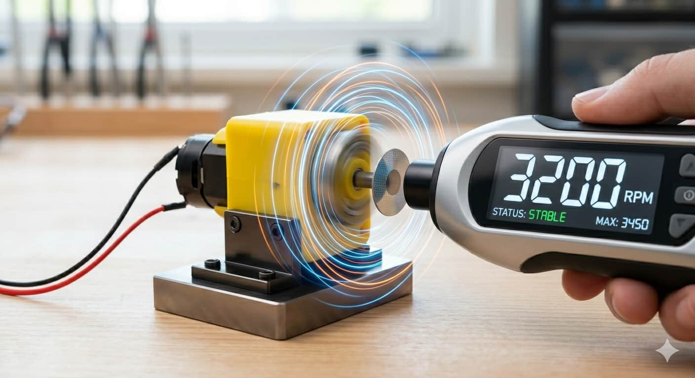
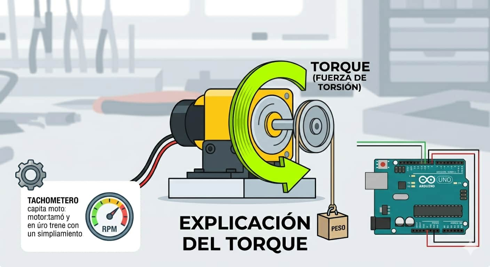
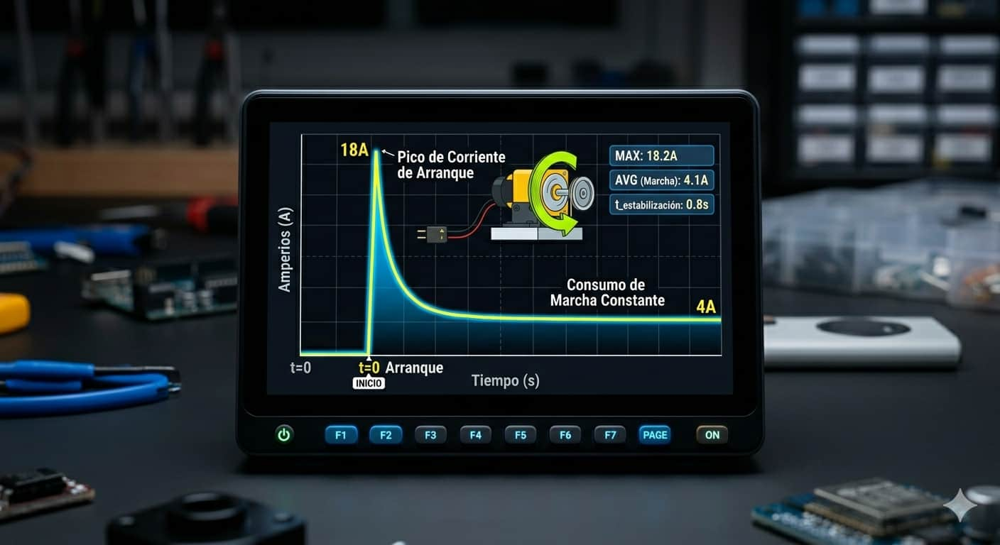
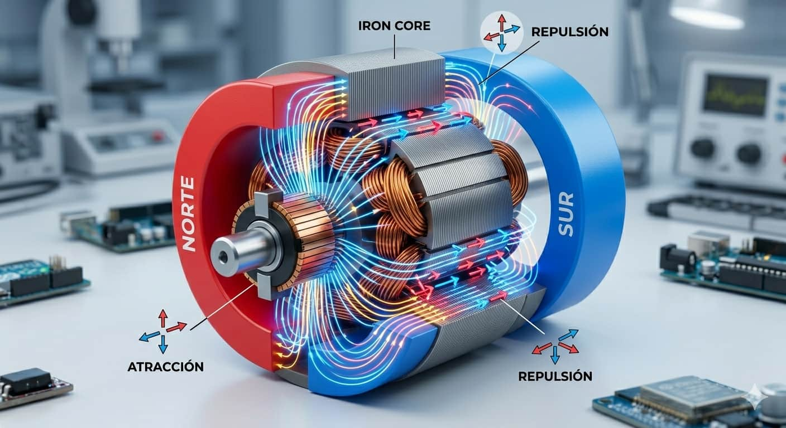
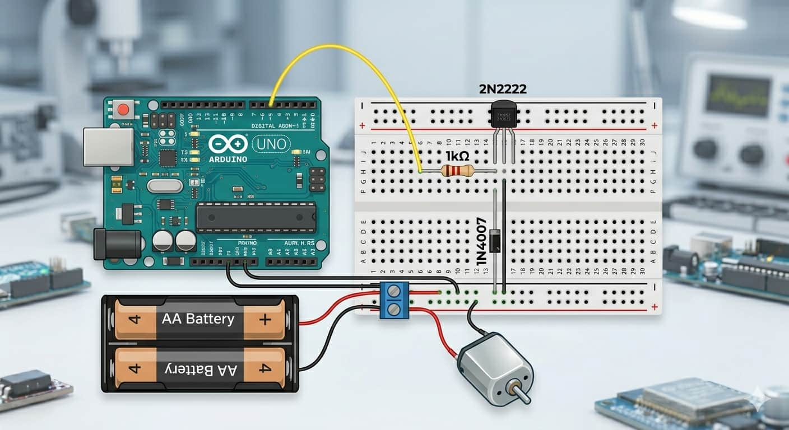

Voltaje y RPM

Los modelos educativos suelen operar a 3V, 6V o 12V. Las RPM indican la velocidad máxima de giro libre que puede alcanzar el eje.

El motor DC es el actuador más común para generar movimiento rotatorio continuo. Su función principal es convertir la energía eléctrica en energía mecánica, convirtiéndose en el corazón de las ruedas de carritos, ventiladores y sistemas móviles.

Los modelos educativos suelen operar a 3V, 6V o 12V. Las RPM indican la velocidad máxima de giro libre que puede alcanzar el eje.

Es la fuerza de torsión del motor. A mayor torque, más peso puede cargar el robot, aunque esto suele sacrificar la velocidad final.

¡Cuidado! Justo al arrancar desde cero, el motor demanda mucha más energía eléctrica que cuando ya se encuentra girando de forma constante.

Se basa en las leyes del electromagnetismo. Al pasar electricidad por las bobinas internas, se genera un campo magnético que choca con los imanes fijos del motor. La fuerza de repulsión constante hace girar el eje central. Analogía: Es como enfrentar dos imanes del mismo polo; se empujan. El motor repite este efecto miles de veces por segundo.
Nunca conectes un motor directo a los pines lógicos del Arduino, ya que el exceso de corriente destruiría el microcontrolador inmediatamente.

Utilizamos un transistor NPN para separar la lógica de control de la etapa de potencia:
Este programa activa el motor a máxima potencia durante tres segundos y lo detiene por dos segundos para descansar:
int motor = 9;
void setup() { pinMode(motor, OUTPUT); }
void loop() {
digitalWrite(motor, HIGH); delay(3000);
digitalWrite(motor, LOW); delay(2000);
}